How can I Develop and configure a funnel for Rogue Investing?
Quick Description
The funnel template is mainly focused on making it easier and faster to develop new funnels by making most of the changes to setup.php, config.php, and pages folder.
Before starting
Download the version of the funnel template to be able to start working.
when you have downloaded the ZIP file, unzip it and rename the folder with the name of the new funnel
then we move the new funnel where it has the rest of the RogueInvesting funnels
Example - as seen in the picture
Once the new funnel folder is added like in the previous image I shared, you can open your preferred web browser and visit the new funnel path to get a result like this
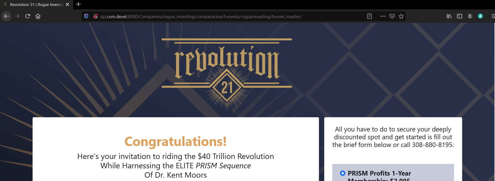
Example - as seen in the picture
If you get this screen in your browser, you can now start setting up the new funnel as below.
this needs to be tested on a local server to work properly (I use xampp).
Start with Development and Configuration
Before starting all this we must already have the information of the pages (graphics, Copys) and everything that involves doing the funnel configuration. Here I am going to divide the development of the funnel into parts.
This file will be found in the main folder of the funnel
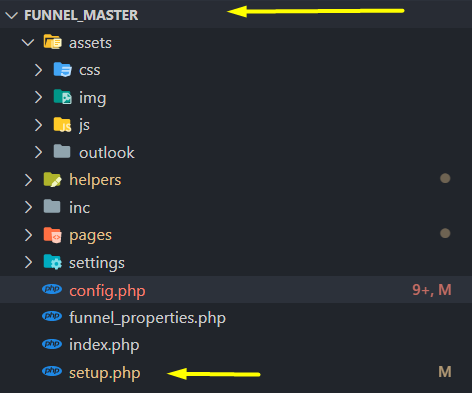
Example - as seen in the picture
Open the setup.php file with the editor of your choice
when you open the file you will have something similar to this in your editor
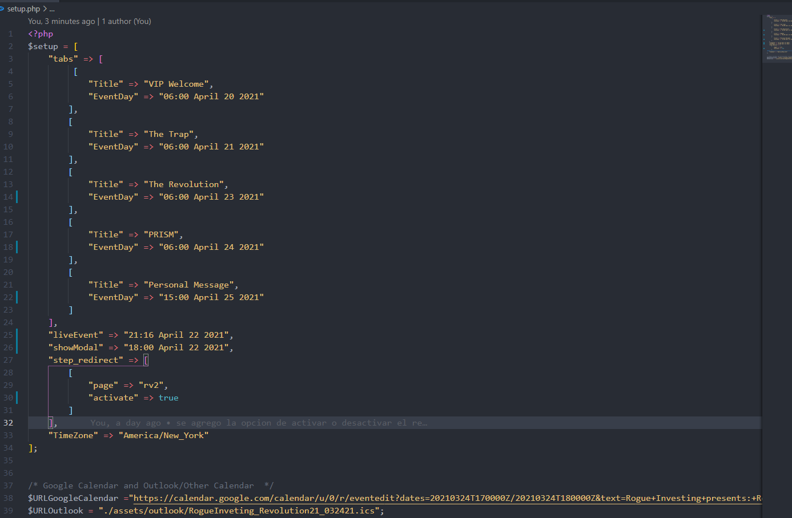
Example - as seen in the picture
In this file most of the configuration will be the tabs of the microsite where we are going to define the dates and titles of the tabs.
possibly you will get a file like this where you can get most of the information for this part Click here to see the example
short definition of the setup.php file
tabs
here we define the titles and dates for each tab of the microsite
LiveEvent
here we put the date of the live event, this date is taken by the countdown counters
showModal
here we put the date to show exit modal
step_redirect
here we define the step and set it to true to redirect LPs, microsite pages, and waitingroom when it's time for the live event.
to do the redirect just make sure you set activate to true
TimeZone
here we only define the time zone.
by default it has the time zone of America / New_York
$URLGoogleCalendar
Here it is only to place the URL of the google calendar that will be provided with the information of the event
$URLOutlook
Here you will receive a file in .ics format that you have to put in the assets/outlook/ folder and in the setup.php file just put the name of the file
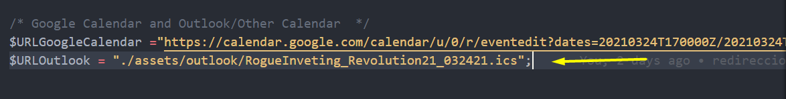
Example - as seen in the picture
Here you will find a variety of templates that you can identify with their name to be able to add the corresponding copy to each page.
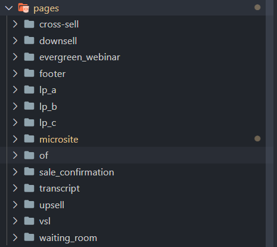
Example - as seen in the picture
At the moment these are the pages that make up a funnel, more can be added if requested
each folder only has the index.php file in which you just need to update the new copy.
If for some reason you need to restructure a page, you can do it without any problem since these pages are developed with the Bootstrap 5 framework.
Anyone with knowledge of HTML and CSS should have no problem restructuring a page or creating a new one.
Assets
If you need to update or add graphics or CSS files, it can all be done within the assets folder found in the main folder of the funnel.
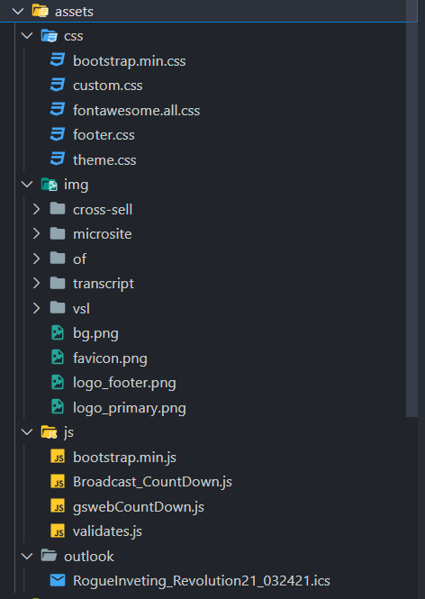
Example - as seen in the picture
I will give you a brief explanation of how this file works
config.php file is divided into two SWITCH (step and prod)
Switch['step']
In this file we configure or define the step that will correspond to each page, so when they enter the funnel and are in a certain step, you must show them the page that you configured in that step
I share an image so you can see what I am trying to explain to you
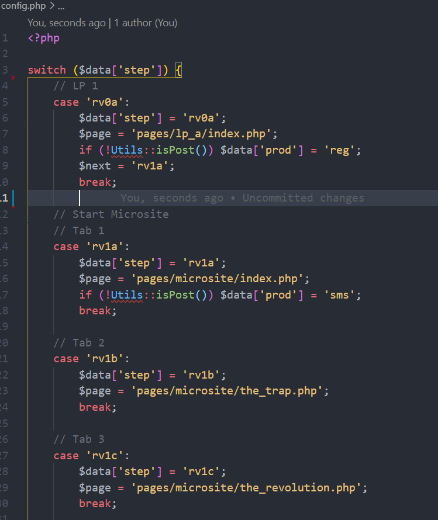
Example - as seen in the picture
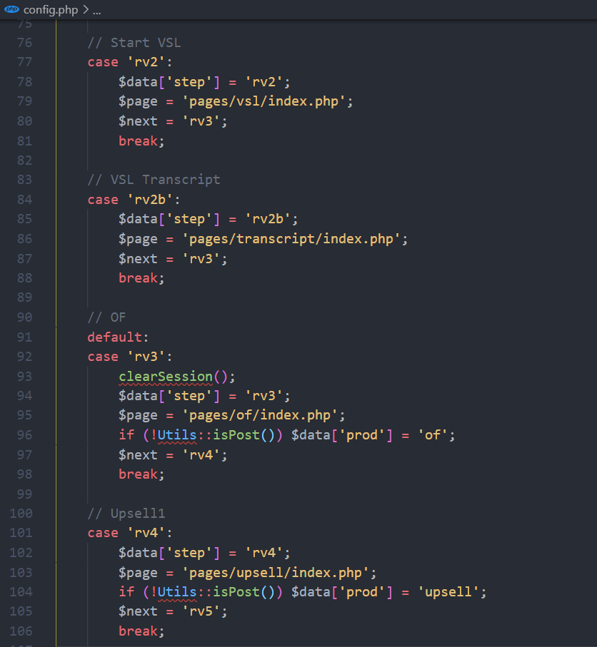
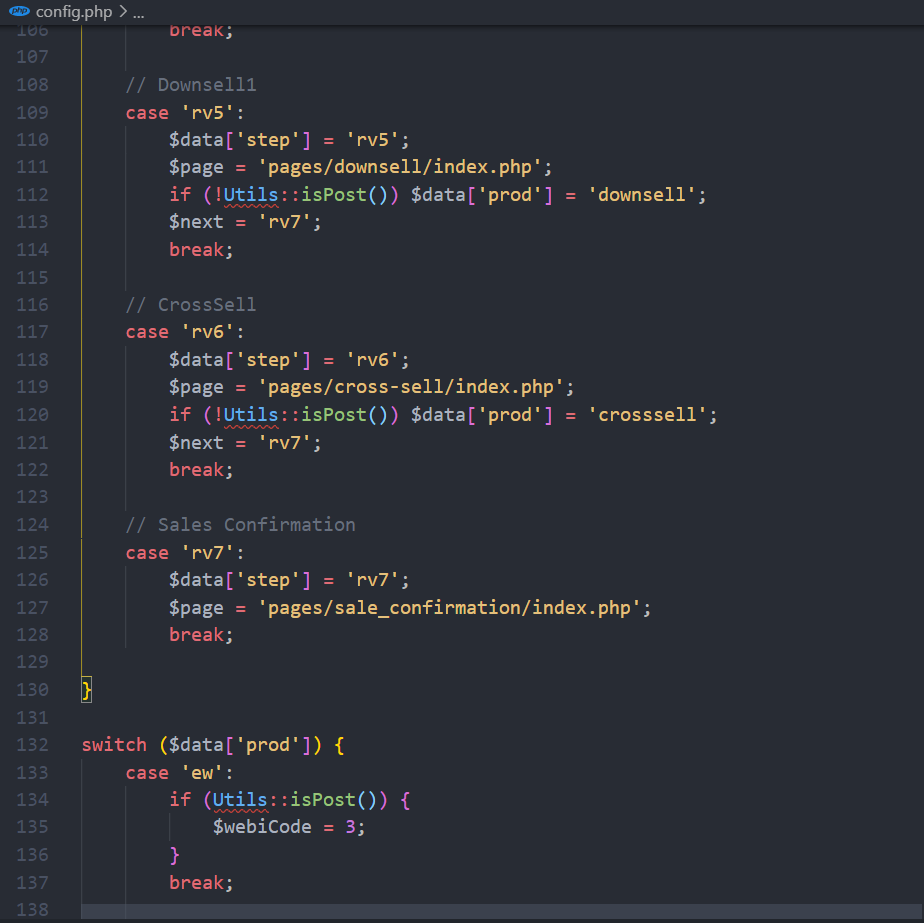
If you look at the image in detail you will notice that in each case there is a step that corresponds to a certain page, for example rv0a you define it for LP1 and rv1a for the first tab of the microsite. This applies to the more pages that belong to this funnel.
$data[step]
we assign the step we are currently in
$page
we define and show the page that will correspond to this step
if (!Utils::isPost()) $data['prod'] = 'reg'
this is an if condition that must be met to perform an action on the switch ['prod']
$next
only the next step is added and it will be applied when the if condition has been met
Switch['prod']
Then I show you in the following images almost the majority of actions that are carried out in switch ['prod']
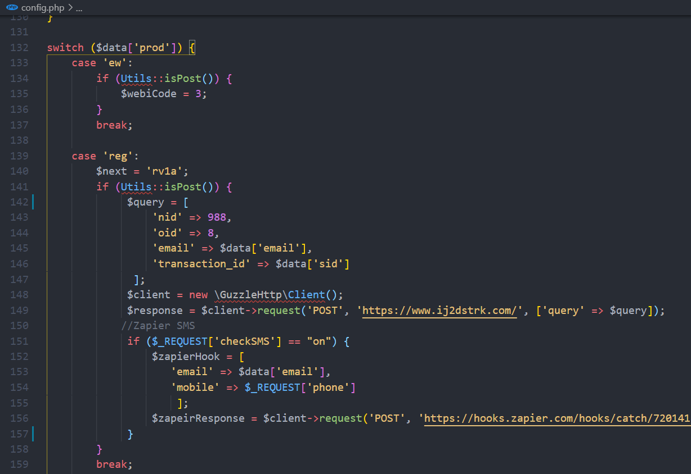
Example - as seen in the picture
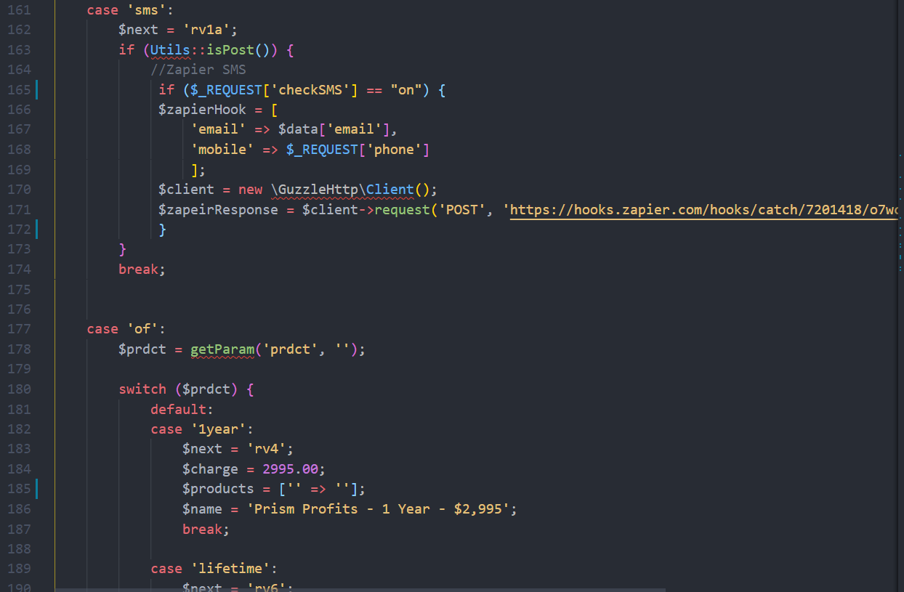
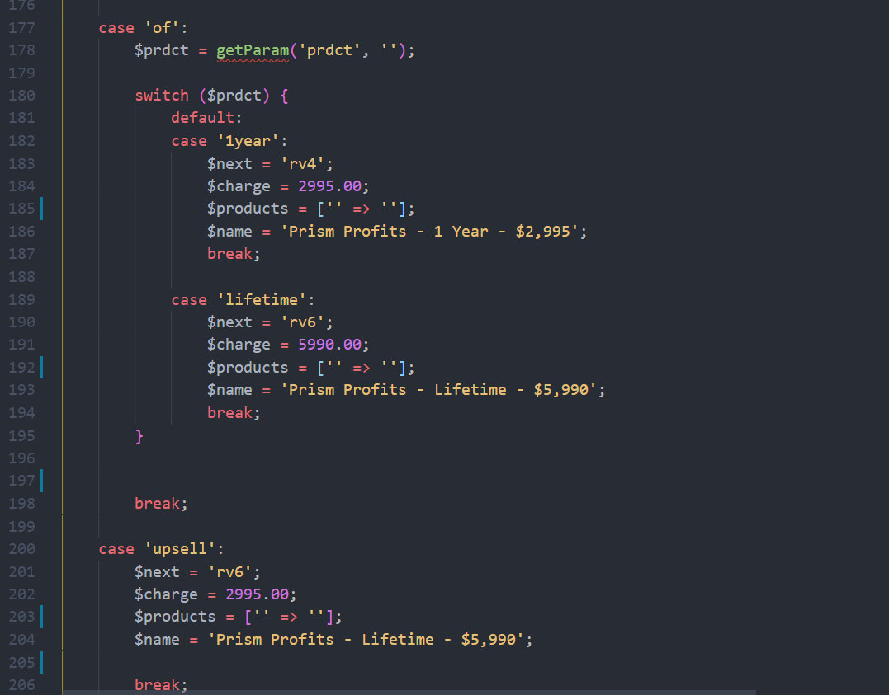
This switch is where the sending of SMS is configured, where the records that are made in each LP are sent and where the names, codes and prices of the products are added for the sales forces.
This documentation will be updated as more requirements are added or new improvements are applied to the funnel. since this funnel template is the first version